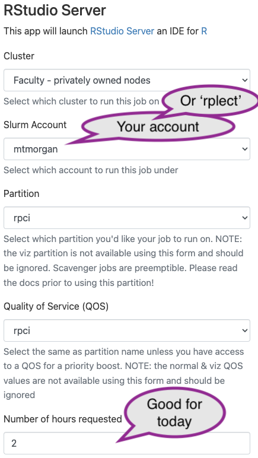
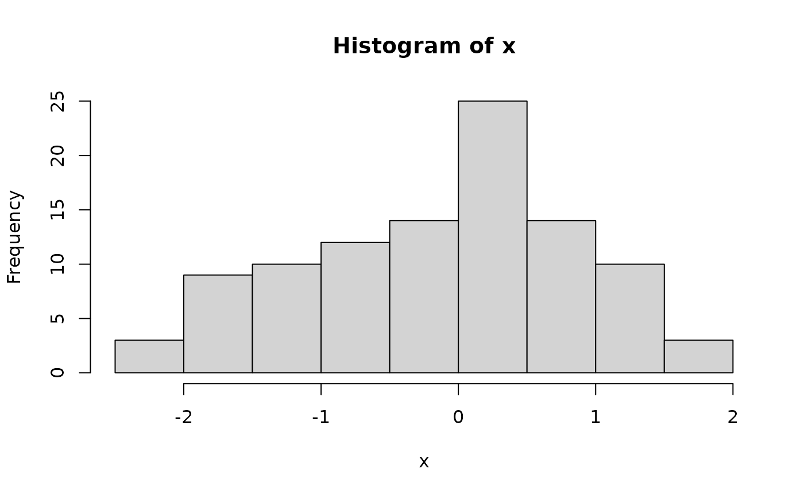
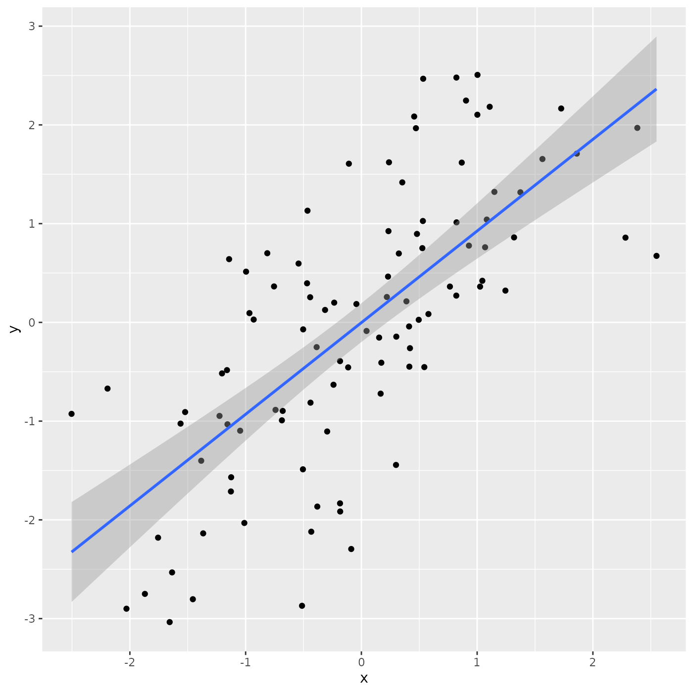

Connecting to the CCR
We’ll use the UB CCR computer cluster for the workshop. This (hopefully) simplifies initial steps in ‘getting going’, while introducing the main resource available when your desktop is not sufficient. See the appendix if you would like to install R and RStudio on your own laptop.
Visit and sign in, using your UB id, from a Roswell Park or UB network: https://ondemand.ccr.buffalo.edu
o ## From CCR to RStudio
-
Use your browser to navigate to https://ondemand.ccr.buffalo.edu/. Look under the “GUIs” section, and choose ‘RStudio Server’.
-
Provide details on the next screen, then click ‘Launch’

- ‘Cluster’: choose “Faculty - privately owned nodes” (these are
‘Roswell’ nodes)
- ‘Slurm account’: choose your user name.
- ‘Partition’: choose ‘rpci’.
- ‘Quality of Service (QOS)’: choose ‘rpci’
- ‘Number of hours requested’: choose 2; you’ll be unceremoniously kicked off after this number of hours, so save any work-in-progress.
-
Clicking the ‘Launch’ button puts your request for compute resources into a queue. You have to wait. Not too long. Hopefully.
-
Eventually the CCR finds resources for your job, and the queue status changes to ‘Running’, with a link to ‘Connect to RStudio Server’. Click on the link to get to your own session of RStudio.
RStudio
We’ll use RStudio extensively. To get going, copy and paste the following line into the ‘Console’
source('/projects/rpci/rplect/Rpg520/Rsetdirs.R')OK, we are ready to go!
Introduction to R
Essential R
A simple calculator
1 + 1
## [1] 2‘Vectors’ as building blocks
c(1, 2, 3)
## [1] 1 2 3
c("January", "February", "March")
## [1] "January" "February" "March"
c(TRUE, FALSE)
## [1] TRUE FALSEVariables, missing values and ‘factors’
age <- c(27, NA, 32, 29)
gender <- factor(
c("Female", "Male", "Non-binary", NA),
levels = c("Female", "Male", "Non-binary")
)Data structures to coordinate related vectors – the
data.frame
df <- data.frame(
age = c(27, NA, 32, 29),
gender = gender
)
df
## age gender
## 1 27 Female
## 2 NA Male
## 3 32 Non-binary
## 4 29 <NA>Key operations on data.frame
-
df[1:3, c("gender", "age")]– subset on rows and columns -
df[["age"]],df$age– select columns
Functions
rnorm(5) # 5 random normal deviates
## [1] -0.06210518 0.24516361 -0.19609835 1.71203274 0.81528088
x <- rnorm(100) # 100 random normal deviates
hist(x) # histogram, approximately normal
‘Vectorized’ operations, e.g., element-wise addition without an
explicit ‘for’ loop. The following creates a vector y by
element-wise addition of the 100 elements of vector x with
100 random normal deviates.
y <- x + rnorm(100)x and y are related, so place them as
columns in a data.frame(). There are 100 rows in the
data.frame(), head() shows the first 6
rows.
df <- data.frame(x, y)
nrow(df)
## [1] 100
head(df)
## x y
## 1 0.9065301 2.71419475
## 2 1.1569693 -0.77572800
## 3 -1.6895861 -1.88289615
## 4 -1.6309127 0.02820584
## 5 -0.2899156 -1.09143588
## 6 -0.4569814 -1.09245563There is a statistical relationship between y and
x, specifically, y is equal to x
plus some random noise. Visualize this using plot().
plot(y ~ x, df)It looks like a linear relationship; can we demonstrate this
statistically? Use the lm() function to fit a
linear model to the relationship between
y and x:
fit <- lm(y ~ x, df)
fit # an R 'object' containing information about the
##
## Call:
## lm(formula = y ~ x, data = df)
##
## Coefficients:
## (Intercept) x
## 0.2201 0.9528
# regression of y on x
summary(fit) # statistical summary of linear regression
##
## Call:
## lm(formula = y ~ x, data = df)
##
## Residuals:
## Min 1Q Median 3Q Max
## -2.30881 -0.86474 -0.02979 0.78164 2.74463
##
## Coefficients:
## Estimate Std. Error t value Pr(>|t|)
## (Intercept) 0.2201 0.1091 2.017 0.0464 *
## x 0.9528 0.1181 8.067 1.82e-12 ***
## ---
## Signif. codes: 0 '***' 0.001 '**' 0.01 '*' 0.05 '.' 0.1 ' ' 1
##
## Residual standard error: 1.09 on 98 degrees of freedom
## Multiple R-squared: 0.3991, Adjusted R-squared: 0.3929
## F-statistic: 65.08 on 1 and 98 DF, p-value: 1.822e-12What about adding the regression line to the scatter plot? Do this by
plotting the points, and then adding abline() to add the
straight line implied by the linear model fit.
Packages
Packages extend functionality of base R. Can be part of the
‘base’ distribution (lm() is from the ‘stats’ package)…
stats::lm(y ~ x)
##
## Call:
## stats::lm(formula = y ~ x)
##
## Coefficients:
## (Intercept) x
## 0.2201 0.9528… or a package contributed by users to the Comprehensive R Archive Network (CRAN), or to Bioconductor or other repositories.
- CRAN – more than 20,000 packages (!) https://CRAN.R-project.org
- Use
install.packages()to install CRAN packages
- Use
- Bioconductor – 2266 packages for high-througput genomic data
analysis https://bioconductor.org
- First install BiocManager
from CRAN, then use
BiocManager::install()to install Bioconductor packages.
- First install BiocManager
from CRAN, then use
A particularly common suite of packages is the ‘tidyverse’. To use the dplyr contributed CRAN package, load the package
A dplyr ‘tibble’ is like a ‘data.frame’, but more user-friendly
tbl <- tibble(
x = rnorm(100),
y = x + rnorm(100)
)
tbl # e.g., only displays the first 10 rows
## # A tibble: 100 × 2
## x y
## <dbl> <dbl>
## 1 -0.523 -1.84
## 2 0.938 0.594
## 3 0.688 2.26
## 4 -0.108 -1.29
## 5 1.20 1.48
## 6 -1.52 -2.38
## 7 -1.60 -3.65
## 8 -0.997 -2.15
## 9 -0.658 -0.719
## 10 -0.0782 0.766
## # ℹ 90 more rowsThe ggplot2 package is often used for visualizing data
ggplot2 uses a ‘grammar of graphics’ to assemble a plot in layers
ggplot(tbl) + # use 'tbl' as a source of data for the plot
aes(x, y) + # use columns 'x' and 'y' for axes
geom_point() + # add x and y coordinates as points
geom_smooth(method = "lm") # add a regression line, with confidence bands
## `geom_smooth()` using formula = 'y ~ x'
How to Learn R
Help
-
Every function has a help page, e.g.,
?data.frame- Sections with ‘Description’, ‘Usage’, ‘Arguments’ (often with defaults), ‘Value’, ‘Examples’
- Can be quite difficult to follow, but are usually quite helpful.
Vignettes
-
Many packages have ‘vignettes’ that illustrate how the package can be used.
vignette(package = "dplyr") ## Vignettes in package 'dplyr': ## ## colwise Column-wise operations (source, html) ## base dplyr <-> base R (source, html) ## grouping Grouped data (source, html) ## dplyr Introduction to dplyr (source, html) ## programming Programming with dplyr (source, html) ## rowwise Row-wise operations (source, html) ## two-table Two-table verbs (source, html) ## in-packages Using dplyr in packages (source, html) ## window-functions Window functions (source, html) vignette(package = "dplyr", "dplyr")
Books
- Hands-on Programming with R introduces R programming. The Very Basics provides an elementary starting point.
- R for Data Science is a book-length web spanning with both introductory and more advanced topics. One of the authors, Hadley Wickham, is the author of the dplyr and ggplot2 packages, among others.
Web resources
- Google can be a great place to find general R resource, e.g., ‘how to do survival analysis in R’
-
StackOverflow is
useful for trouble-shooting particular problems – ‘I try to fit a linear
model with
lm(mgp ~ cyl, mtcars)but R says …, what am I doing wrong?’. - ChatGPT & friends can also be useful, especially if asking well-focused questions or, e.g., asked to ‘explain the following R code’ to help understand code someone else has written. I have almost always disagreed with the specific code ChatGPT generates; sometimes it simply does not work (e.g., use the package ‘X’, but ‘X’ is not a package), but more dangerous are the situations where code is syntactically correct but provides the wrong answer. Use, but with extreme care!
Grading for this week
The task for this week is to write an R script that performs data management and statistical analysis of a data set of your choice – essentially reproducing selected steps in the work that we will do on Wednesday.
You will provide me (on the CCR server) with a file ‘your_name.R’. I
will run the file in a new R session using the command
source('your_name.R', echo = TRUE). This will read and
evaluate each R command in the file.
Grading will be out of 10, with the following thresholds
- 7 / 10 if
source('your_name.R', echo = TRUE)works without error. - 8 / 10 for scripts that implement more extensive analyses, or that present interesting or complicated data.
- up to 10 / 10 for work that goes beyond the material we cover this week, e.g., using ‘Rmarkdown’ to present your work, performing additional (and appropriate) data manipulation steps using dplyr or other packages, additional visualizations or statstical analyses.
Note that the 7 / 10 score could be obtained by copying & pasting (a subset of) the commands from Wednesday’s lab into ‘your_name.R’. Please feel free to contact or speak with me if you have problems or ideas.
Session information
For reproducibility, I record the software versions used to create this document
sessionInfo()
## R version 4.3.2 (2023-10-31)
## Platform: x86_64-pc-linux-gnu (64-bit)
## Running under: Ubuntu 22.04.3 LTS
##
## Matrix products: default
## BLAS: /usr/lib/x86_64-linux-gnu/openblas-pthread/libblas.so.3
## LAPACK: /usr/lib/x86_64-linux-gnu/openblas-pthread/libopenblasp-r0.3.20.so; LAPACK version 3.10.0
##
## locale:
## [1] LC_CTYPE=C.UTF-8 LC_NUMERIC=C LC_TIME=C.UTF-8
## [4] LC_COLLATE=C.UTF-8 LC_MONETARY=C.UTF-8 LC_MESSAGES=C.UTF-8
## [7] LC_PAPER=C.UTF-8 LC_NAME=C LC_ADDRESS=C
## [10] LC_TELEPHONE=C LC_MEASUREMENT=C.UTF-8 LC_IDENTIFICATION=C
##
## time zone: UTC
## tzcode source: system (glibc)
##
## attached base packages:
## [1] stats graphics grDevices utils datasets methods base
##
## other attached packages:
## [1] ggplot2_3.4.4 dplyr_1.1.4
##
## loaded via a namespace (and not attached):
## [1] Matrix_1.6-1.1 gtable_0.3.4 jsonlite_1.8.8 compiler_4.3.2
## [5] highr_0.10 tidyselect_1.2.0 stringr_1.5.1 jquerylib_0.1.4
## [9] splines_4.3.2 scales_1.3.0 systemfonts_1.0.5 textshaping_0.3.7
## [13] yaml_2.3.8 fastmap_1.1.1 lattice_0.21-9 R6_2.5.1
## [17] labeling_0.4.3 generics_0.1.3 knitr_1.45 tibble_3.2.1
## [21] desc_1.4.3 munsell_0.5.0 bslib_0.6.1 pillar_1.9.0
## [25] rlang_1.1.3 utf8_1.2.4 cachem_1.0.8 stringi_1.8.3
## [29] xfun_0.42 fs_1.6.3 sass_0.4.8 memoise_2.0.1
## [33] cli_3.6.2 mgcv_1.9-0 withr_3.0.0 pkgdown_2.0.7
## [37] magrittr_2.0.3 digest_0.6.34 grid_4.3.2 nlme_3.1-163
## [41] lifecycle_1.0.4 vctrs_0.6.5 evaluate_0.23 glue_1.7.0
## [45] farver_2.1.1 ragg_1.2.7 colorspace_2.1-0 fansi_1.0.6
## [49] rmarkdown_2.25 purrr_1.0.2 tools_4.3.2 pkgconfig_2.0.3
## [53] htmltools_0.5.7